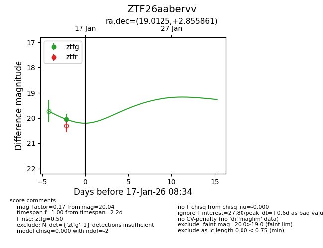
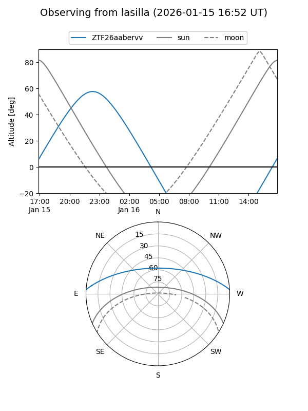
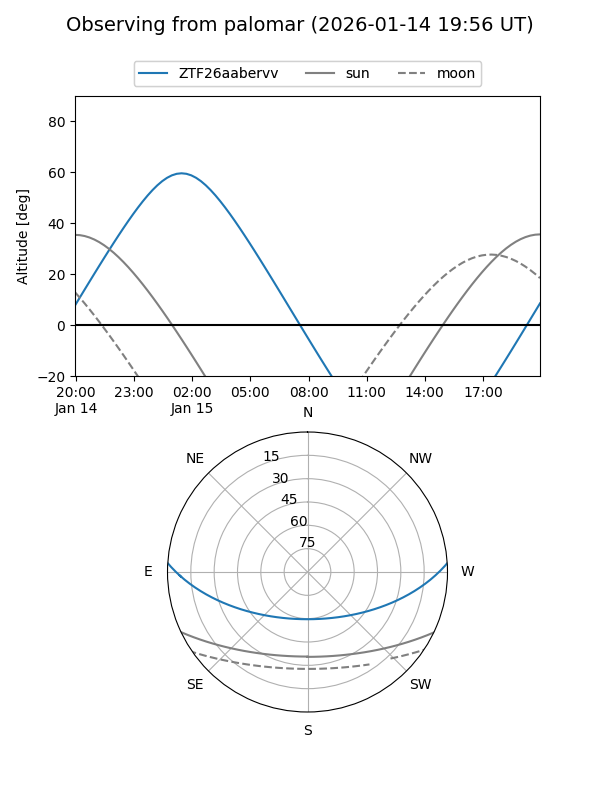
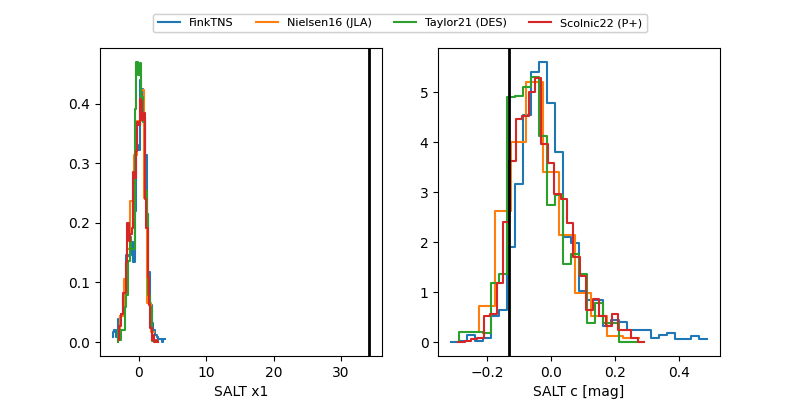

ZTF26aabervv
Target ZTF26aabervv at 2026-01-17 08:35
Aliases and brokers:
FINK: link
Lasair: link
ALeRCE: link
alt names
ZTF26aabervv (ztf,fink_ztf)
Coordinates:
equatorial (ra, dec) = 19.0125,+2.85586
equatorial (HMS+DMS) = 01:16:03.00,+02:51:21.10
galactic (l, b) = (135.0842,-59.43393)
Flags:
Photometry:
last ztfg=20.04
1 ztfg detections
Lightcurve

Visibility


Additional plots
